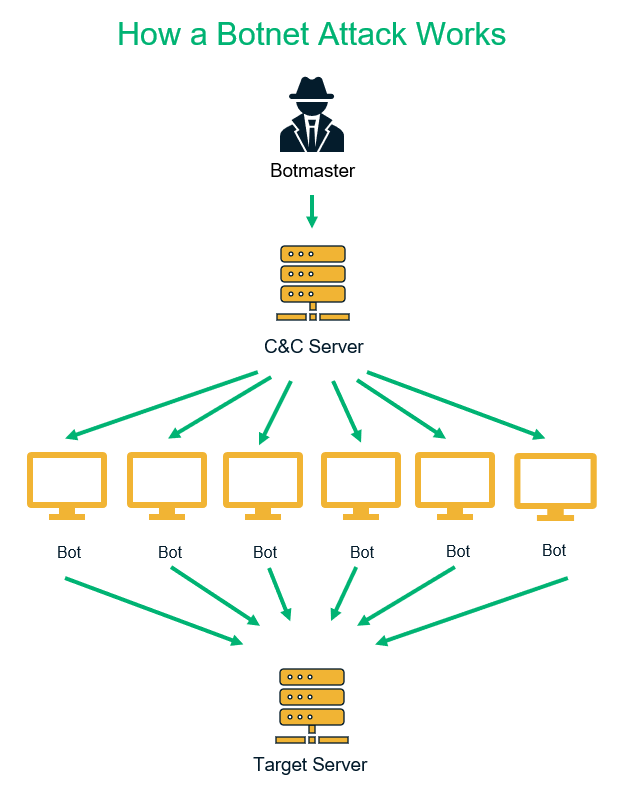

DDoS Attacks
A DDoS (Distributed Denial of Service) attack tries to make a website or an online service unavailable. The attacker sends so much traffic from many computers at the same time that the server cannot answer real users anymore.
DoS and DDoS
In a DoS attack the traffic comes from one computer, so it is easy to block. In a DDoS attack the traffic comes from thousands of devices all over the world, so it is much harder to tell the attack apart from normal visitors.
These devices are usually part of a botnet: computers, routers and cameras infected with malware and controlled by the attacker. Their owners often do not know it.

The three types of DDoS
1. Volumetric attacks
The goal is to fill the victim's internet connection with useless traffic. A common technique is amplification: the attacker sends small requests to public servers (for example DNS servers) but writes the victim's address as the sender. The servers send big answers to the victim.
| Protocol | Amplification |
|---|---|
| DNS | 28 to 54 times |
| NTP | 556 times |
| Memcached | 10,000 to 51,000 times |
2. Protocol attacks
These attacks use the rules of network protocols to use up the memory of servers and firewalls.
The best known is the SYN flood. To open a TCP connection, the client sends
SYN, the server answers SYN-ACK and waits for the final ACK.
The attacker sends many SYN packets and never finishes the connection, so the server
keeps waiting until it has no space left for real users.
3. Application layer (L7) attacks
These attacks target the website itself (layer 7 of the network model). Every request looks normal, but the requests are slow and expensive for the server, for example searches or logins. Examples are HTTP floods and Slowloris, which keeps many connections open by sending data very slowly.
Famous examples
- Mirai (2016): a botnet made of IoT devices with default passwords attacked the DNS provider Dyn, and many popular websites became unreachable.
- GitHub (2018): GitHub received about 1.35 Tbps of traffic from a Memcached amplification attack and was offline for a few minutes.
- HTTP/2 Rapid Reset (2023): a new L7 technique reached 398 million requests per second against Google.
How to defend
- Use a CDN or a DDoS protection service that spreads the traffic over many servers.
- Enable SYN cookies against SYN floods.
- Limit how many requests one user can send per second (rate limiting).
- Use a Web Application Firewall to block bots.
- Change the default passwords of your devices so they cannot join a botnet.
Sources
- Cloudflare, "What is a DDoS attack?"
- Cloudflare, "SYN flood attack"
- Cloudflare, "What is the Mirai botnet?"
- CISA, "UDP-Based Amplification Attacks"
- GitHub Blog, "February 28th DDoS Incident Report"
- Google Cloud Blog, "How it works: The novel HTTP/2 Rapid Reset DDoS attack"
- Image: "How a Botnet Attack Works", INFOSEC INSIGHTS